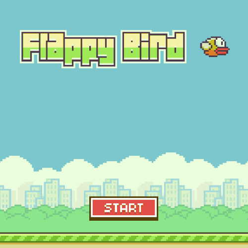

🏡 Bienvenid@s
En este tutorial vamos a embarcarnos en la creación de un videojuego 2D inspirado en uno de los fenómenos virales más emblemáticos de la historia del gaming 🐦Flappy Bird.
Nuestro objetivo no es clonar el juego original, sino reinterpretarlo con nuestro propio enfoque creativo, tanto en mecánicas como en estética, dando lugar a un nuevo título: Bërd Lawson.

Este proyecto será una oportunidad ideal para aprender o reforzar conceptos esenciales del desarrollo de videojuegos con Unity, uno de los motores más populares y versátiles de la industria. Independientemente de si estás empezando o si ya tienes algo de experiencia previa, este tutorial está diseñado para acompañarte paso a paso en el proceso de construcción de un juego completo, desde cero y con herramientas accesibles.
¿Qué vamos a construir?
Bërd Lawson es un juego arcade en 2D de mecánica sencilla pero adictiva 👉 controlamos a un pájaro que debe volar por un escenario infinito mientras esquiva obstáculos móviles. El jugador solo necesita un botón (la barra espaciadora o acualquier otra tecla) para hacer que el pájaro aletee y gane altura:
Aunque esta dinámica pueda parecer simple, esconde todo un conjunto de elementos que nos permitirán explorar conceptos técnicos muy valiosos:
Conceptos técnicos a aprender
📐 Físicas en 2D
🧱 Detección de colisiones
🥎 Generación procedural de obstáculos
🌊 Control del flujo de juego (inicio, pausa, reinicio)
🪟 Interfaz de usuario (UI)
🔢 Puntuación y persistencia de datos
🍃 Animaciones básicas
🔊 Sonido y retroalimentación visual
¿Por qué un juego como Flappy Bird?

Porque, desde el punto de vista pedagógico, Flappy Bird (y por extensión Bërd Lawson) es un caso de estudio excelente. Nos permite centrarnos en los aspectos fundamentales del diseño y la programación sin que la complejidad técnica abrume el proceso de aprendizaje. Además, la simplicidad de su jugabilidad hace que cualquier mejora, por pequeña que sea, tenga un impacto directo y visible en la experiencia del jugador.
También nos permite abrir la puerta a la creatividad: aunque partimos de una base reconocible, podrás modificar gráficos, físicas, mecánicas o estética para darle tu propio estilo al proyecto. Bërd Lawson no es un simple clon; es un lienzo sobre el que aprender, experimentar y expresarse.
¿Qué aprenderás con este tutorial?
A lo largo del desarrollo de Bërd Lawson, vamos a abordar múltiples temas prácticos del desarrollo de videojuegos con Unity:
Nuevas habilidades
📚 Cómo organizar un proyecto 2D en Unity desde cero
⚙️ Uso del sistema de físicas Rigidbody2D y colisionadores
👨💻 Creación de scripts en C# para gestionar el comportamiento del jugador y los obstáculos
📦 Programación orientada a eventos para controlar el flujo del juego
🗺️ Uso de prefabs para generar obstáculos dinámicamente
🪟 Diseño de interfaces con el sistema Canvas de Unity
🔊 Incorporación de efectos de sonido y animaciones básicas
🎮 Opciones para exportar el juego a diferentes plataformas
Además, tocaremos algunos principios de diseño de videojuegos: ritmo, dificultad progresiva, retroalimentación audiovisual, y pequeños trucos que mejoran la jugabilidad sin requerir código complejo.
¿A quién va dirigido este tutorial?
Este tutorial está pensado para personas que:
- Quieren aprender a usar Unity desde un enfoque práctico.
- Tienen curiosidad por entender cómo se estructura un videojuego completo.
- Buscan un proyecto sencillo pero estimulante para poner en práctica lo aprendido.
- Desean experimentar con mecánicas arcade y diseño minimalista.
- O simplemente, disfrutan de los retos creativos.
No necesitas conocimientos previos avanzados en Unity ni en programación, aunque saber lo básico de C# te ayudará. Si es tu primer contacto con Unity, este proyecto será una excelente puerta de entrada. Si ya tienes experiencia, te servirá como base para personalizar y expandir.